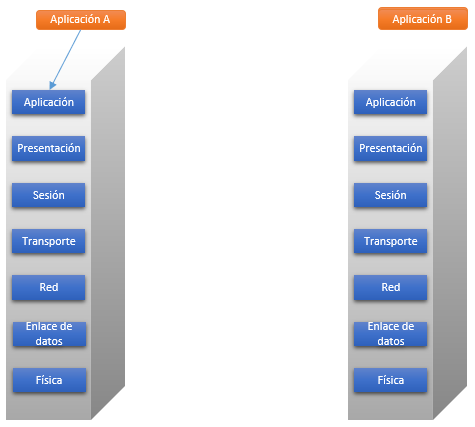

Modelo de referencia OSI
En el material expuesto a continuación se explicará el modelo de referencia OSI.
Los temas tratados serán:
- Introducción a OSI
- Funcionamiento del entorno OSI
- Descripción de las capas
- Protocolos usados
En algunas secciones se encuentran secuencias explicativas donde se debe avanzar (o retroceder) utilizando los botones correspondientes. Tambien es posible encontrarse con siglas o palabras con links que dirigen a un glosario con sus definiciones. Al abandonar una sección para dirigirse a otra, no se pierde el avance en las secuencias.
En la barra de la parte superior de la pantalla es posible dirigirse a los otros materiales disponibles haciendo click en la opción deseada.
OSI
Al momento de establecer una comunicación entre computadores de distintos fabricantes, resulta compleja y costosa la implementación de software específico debido a los distintos formatos de intercambio de datos. La forma de superar esto es que los fabricantes adopten un conjunto de convenciones comunes.
Existen dos arquitecturas primordiales en el desarrollo de estándares de comunicación: el conjunto de protocolos TCP/IP y el modelo de referencia OSI.
En 1977 la ISO (International Organization for Standardization) estableció un subcomité para el desarrollo de una arquitectura de comunicaciones que constituyera el marco de trabajo para el proceso de normalización. El resultado fue el modelo de referencia OSI.
El fin de la creación del modelo OSI fue definir un conjunto de capas y los servicios que realizan. La división en capas debería agrupar a funciones que conceptualmente estén próximas en un número que fuera suficiente, para que la capa sea lo más pequeña posible, pero al mismo tiempo evitando la creación de demasiadas capas para no sobrecargar el procesamiento.
Entorno OSI
Como resultado de lo anterior, se creó una arquitectura de 7 capas. A continuación se describe la comunicación en un entorno OSI.


En un entorno OSI cada sistema debe contener las 7 capas. Si la aplicación A quiere transmitir un mensaje a la aplicación B, invoca a la capa de aplicación (capa 7).
Capa física
Esta capa se carga de la interfaz física entre los dispositivos que se comunican, definiendo las reglas que rigen la transmisión de bits. Las características más importantes de esta capa son:
Mecánicas: se relacionan con las propiedades físicas de la interfaz con el medio transmisor, incluyéndose la especificación de los circuitos.
Eléctricas: especificación de cómo se representan los bits (en niveles de tensión), así como su velocidad de transmisión.
Funcionales: especificación de las funciones de cada circuito de la interfaz física entre el sistema y el medio de transmisión.
De procedimiento: especificación de la secuencia de eventos en que se realiza el intercambio del flujo de bits a través del medio físico.
Capa de enlace de datos
Esta capa está encargada de asegurar que el enlace físico sea fiable, proporcionando además los medios para activar, mantener y desactivar el enlace. El servicio principal que esta capa provee a las capas superiores es el de detección y control de errores, de esta manera al tener un nivel de enlace de datos completamente operativo, las capas superiores pueden asumir que la transmisión está libre de errores. HDLC y LLC son algunos de los protocolos utilizados en esta capa.
Capa de red
Esta capa está a cargo de la transferencia de información entre sistemas finales a través del uso de algún tipo de red de comunicación. La capa de red hará que el computador establezca un diálogo con la red para especificar el computador destino y la solicitud de otros servicios, como la gestión de prioridades. Esta capa libera a las demás del conocimiento sobre las tecnologías de conmutación que se utilizan para conectar los sistemas.
Un enlace punto-a-punto directo entre sistemas finales no hace uso de la capa de red, ya que la capa de enlace de datos puede proporcionar las funciones de gestión de enlace necesarias. Entre las distintas topologías que pueden ser gestionadas por la capa de red, la más sencilla sería la de un sistema conectado a través de una única red (red de conmutación de paquetes), como se describe en el siguiente esquema:
Las tres capas inferiores están relacionadas con la conexión y la comunicación con la red.
Capa de transporte
Esta capa proporciona un mecanismo para el transporte de datos entre sistemas finales (no es utilizada en nodos intermedios). El servicio de transporte orientado a conexión asegura que los datos se entregan libres de errores, en orden y sin pérdidas ni duplicaciones. Se puede involucrar en la optimización del uso de los servicios y de red y en proporcionar la calidad del servicio solicitada.
ISO ha desarrollado una familia de protocolos de transporte normalizados, cada uno para un determinado servicio subyacente. Uno de estos protocolos es ISO-TP (Transport Layer).
Esta capa libera a las entidades de las capas superiores de cualquier preocupación sobre el transporte de datos entre ellas.
Capa de sesión
La capa de sesión proporciona los mecanismos para controlar el diálogo entre las aplicaciones de los sistemas finales.
Las cuatro capas descritas anteriormente proporcionan un medio para el intercambio fiable datos (permitiendo distintos niveles de calidad de servicio). Esto no resulta suficiente para muchas aplicaciones que necesitan mecanismos para organizar, sincronizar diálogo y controlar el intercambio de datos. Estas capacidades podrían implementarse en la capa 7 de aplicación, pero ya que son vastamente requeridas, es lógico implementarlas en una capa separada. Los servicios proporcionados por esta capas son:
Control de diálogo: el que puede ser simultáneo en los dos sentidos (full-dúplex) o alternado en ambos sentidos (half-dúplex).
Agrupamiento: el flujo de datos se puede marcar para definir grupos de datos.
Recuperación: proporcionar un procedimiento de puntos de comprobación, de forma que se puedan retransmitir todos los datos desde el último punto de comprobación si hay algún fallo entre los puntos.
Capa de presentación
Esta capa define el formato de los datos que se intercambian entre aplicaciones y ofrece un servicio conversión de datos. Define sintaxis entre las entidades y proporciona medios para seleccionar y modificar la representación utilizada. Algunos servicios específicos son la compresión y cifrado de datos.
Capa de aplicación
Esta capa es la conexión entre las aplicaciones del computador y el entorno OSI. Acá pertenecen las funciones de administración y mecanismos para la implementación de aplicaciones distribuidas, además de residir las aplicaciones de uso general como la transferencia de archivos, el correo electrónico, etc.